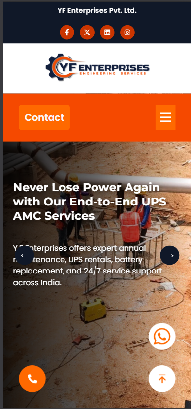
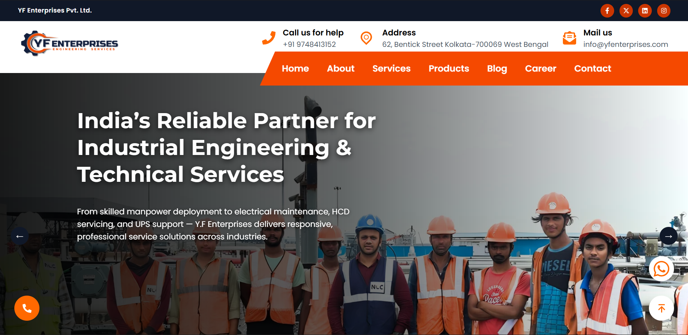

Table of Contents
| S.No. |
Content |
Page Number |
| 1. | Company Overview | 02 |
| 2. | Internship Objectives | 03 |
| 3. | Scope of Work | 04 |
| 4. | Problem Statement | 05 |
| 5. | Technology Stack Used | 06 |
| 6. | System Architecture & Workflow | 07 |
| 7. | Website Features & Modules | 08 |
| 8. | Development & Deployment | 09 |
| 9. | Conclusion & Future Enhancements | 10 |
| 10. | References | 11 |
| 11. | Annexure (Screenshots) | 12 |
1. Company Overview
Y.F Enterprises, established in 2013 in Kolkata by its visionary founder Mr. Omar Farooque, has grown into a prominent multidisciplinary engineering solutions provider. The company specializes in serving a diverse range of critical sectors, including Oil & Gas, Power, Water Treatment, Pharmaceuticals, and Cement manufacturing.
The firm's core expertise encompasses a comprehensive suite of services: Electrical, Instrumentation, Automation, Firefighting, and advanced Security Systems. Y.F Enterprises prides itself on a client-centric approach, delivering complete turnkey solutions that cover the entire project lifecycle—from initial design and engineering to procurement, installation, and final commissioning.
Mission and Vision
-
Mission: To deliver superior engineering solutions that enhance operational efficiency, safety, and reliability for clients, while adhering to the highest standards of quality and integrity.
-
Vision: To be a globally recognized leader in integrated engineering services, renowned for innovation, sustainability, and unwavering commitment to client success.
Core Values
- Safety: Prioritizing the health and safety of all stakeholders in every operation.
- Quality: Ensuring every project meets rigorous international standards.
- Innovation: Leveraging modern technology to solve complex engineering challenges.
- Client Satisfaction: Building lasting relationships through exceptional service.
2. Internship Objectives
The primary goal of this internship was to design and develop a professional, modern, and responsive corporate website for Y.F Enterprises. This project was conceived to replace the company's non-existent or outdated digital footprint, thereby enhancing its brand image and global accessibility.
The core objectives of this internship were defined as follows:
-
Digital Presence Creation: To establish a strong, professional online identity for Y.F Enterprises. This serves as the 'digital front door' for the company, projecting its values and multidisciplinary expertise to a global audience and enhancing its credibility.
-
Service & Project Showcase: To create a clear, intuitive, and visually appealing platform to showcase the company's diverse services. This involved building a centralized portfolio to highlight completed projects, demonstrating capability and building trust with potential clients.
-
Lead Generation & Communication: To integrate seamless enquiry and career application forms. This creates direct, efficient, and trackable channels for potential clients and job applicants, reducing response times and helping to qualify incoming leads.
-
Brand & UI Consistency: To design and implement a consistent and modern User Interface (UI) that reinforces brand identity. A cohesive design ensures a positive User Experience (UX), builds user trust, and improves brand recall across all devices.
-
Technical Skill Acquisition: To gain practical, hands-on experience in a modern web development stack. This objective focused on bridging academic theory with practical application by building a real-world project using React.js, Tailwind CSS, GSAP, and full-stack deployment workflows.
3. Scope of Work
The project's scope encompassed the complete lifecycle of web development, from initial planning to final deployment. The goal was to deliver a production-ready website that serves as the company's primary digital marketing and communication tool.
The work was broadly divided into the following phases:
-
Discovery and Planning:
- Conducting stakeholder meetings to understand business requirements.
- Analyzing the services, target audience, and key information to be presented.
- Defining the site architecture, navigation, and user flow.
-
Design and Prototyping:
- Creating low-fidelity wireframes for layout and structure.
- Designing high-fidelity mockups reflecting the company's brand identity.
- Focusing on a responsive design that works seamlessly on mobile, tablet, and desktop.
-
Frontend Development:
- Building reusable components using React.js.
- Styling all components and pages using the Tailwind CSS utility-first framework.
- Integrating GSAP and Locomotive Scroll for sophisticated animations and smooth scrolling effects.
-
Backend Integration:
- Developing a simple Node.js backend API to handle form submissions.
- Implementing logic to securely process data from the 'Contact' and 'Career' forms.
-
Testing and Deployment:
- Performing cross-browser and multi-device testing to ensure compatibility.
- Deploying the frontend application to Hostinger and the backend API to Vercel.
- Configuring the domain, SSL certificate, and ensuring site security.
4. Problem Statement
Prior to this project, Y.F Enterprises, despite its significant real-world engineering achievements, faced a critical gap in the digital sphere. The company lacked a unified, professional, or accessible online presence.
Key Issues Identified:
-
Lack of Visibility: Potential clients, partners, and talent (both domestic and international) had no central, reliable source to find information about the company, its services, or its track record.
-
Inefficient Communication: All inquiries, whether from potential clients or job seekers, were handled through scattered, manual methods (e.g., direct emails, phone calls). This process was inefficient, difficult to track, and prone to delays.
-
Weak Brand Image: In an increasingly digital world, the absence of a modern website projected an outdated image, which was not reflective of the company's high-tech, innovative engineering solutions.
-
No Portfolio Showcase: The company had no effective way to digitally showcase its impressive portfolio of completed projects, a key factor in building trust and credibility with new clients.
Therefore, the problem was to develop a comprehensive, secure, and responsive website that would solve these issues by centralizing information, streamlining communication, and elevating the company's brand to match its real-world capabilities.
5. Technology Stack Used
The selection of technologies was crucial to meet the project's objectives of creating a modern, high-performance, and maintainable website.
Frontend
-
React.js: Chosen for its component-based architecture, which allows for the creation of reusable UI elements. This improves development speed and long-term maintainability. Its virtual DOM ensures a fast and responsive user experience.
-
Tailwind CSS: A utility-first CSS framework selected for its ability to rapidly prototype and build custom designs directly in the HTML. It eliminates the need for large, custom CSS files and enforces a consistent design system.
-
GSAP (GreenSock Animation Platform) & Locomotive Scroll: These libraries were used in conjunction to create professional-grade, smooth-scrolling parallax effects and intricate animations. This was vital for giving the site a modern, engaging feel that captures user attention.
Backend
-
Node.js: Used to build a lightweight, efficient REST API. Its asynchronous, non-blocking I/O model makes it perfectly suited for handling form submissions and other simple server-side tasks without requiring a heavy, monolithic backend.
-
Vercel: Chosen as the deployment platform for the Node.js API. Its seamless Git integration, serverless functions, and automatic scaling provide a robust, cost-effective solution for hosting backend services.
Deployment & Hosting
-
Hostinger: Selected for hosting the frontend React application. It provides a user-friendly control panel, reliable uptime, and straightforward integration of SSL certificates (HTTPS), which is essential for site security and user trust.
-
Git & GitHub: Used for version control. All code was managed in a GitHub repository, allowing for systematic tracking of changes, collaboration, and simplified deployment workflows to both Hostinger and Vercel.
6. System Architecture & Workflow
The system employs a decoupled, or "headless," architecture. The frontend (client) is entirely separate from the backend (server), and they communicate only through an API. This modern approach ensures scalability, security, and flexibility.
High-Level Architecture
-
Client (Browser): The user accesses the website, which is a static React application served from Hostinger. All UI rendering, animations, and state management happen in the user's browser.
-
API Layer (Serverless): The Node.js backend, hosted on Vercel, exists as a set of serverless functions. It has no permanent connection to the frontend; it only "wakes up" when an API request is made (e.g., a form is submitted).
-
Data Exchange: Communication happens via HTTPS using REST API principles. The frontend sends data (in JSON format) to the backend, and the backend returns a status response (e.g., "Success" or "Error").
User Enquiry Workflow (Example)
The most critical workflow is the handling of client enquiries:
- A user navigates to the "Contact Us" page.
- They fill out the form (Name, Email, Message, etc.).
- The React application performs client-side validation (e.g., "Is the email format correct?").
- If valid, the frontend packages the form data into a JSON object.
- A secure `POST` request is made to the Node.js API endpoint on Vercel.
- The Vercel function receives the data, performs server-side sanitization to prevent security risks, and (in this project) formats an email to be sent to the company's admin.
- The API sends a "Success" response back to the React frontend.
- The frontend receives the success message and displays a "Thank you" notification to the user.
This decoupled flow ensures that even if the backend API fails, the frontend website remains online and accessible.
7. Website Features & Modules
The website is structured into several key modules, each designed to fulfill a specific user need.
-
Home Page:
- Features a dynamic, animated "hero" section to immediately capture user interest.
- Provides a high-level overview of the company's core services.
- Includes clear calls-to-action (CTAs) guiding users to key pages (e.g., "Our Services," "Contact Us").
-
About Us Page:
- Details the company's history, mission, and vision.
- Features an interactive timeline showcasing key company milestones and achievements.
- Builds trust and establishes the company's credibility and experience.
-
Services Pages:
- Provides dedicated, detailed pages for each of the company's main verticals: Instrumentation, Electrical, Automation, and Cybersecurity.
- Uses a clean, organized layout to explain the specifics of each service.
-
Projects Page:
- A portfolio section showcasing successfully completed projects.
- Includes project summaries, and (where available) images or case studies.
- Features filters to allow users to sort projects by service type or industry.
-
Contact & Career Pages:
- Contact Form: An integrated, validated form for general and client enquiries.
- Career Form: A separate, dedicated form for job applicants to submit their information and resumes.
- Includes an interactive map showing the company's location.
-
Core Technical Features:
- Responsive Design: The layout fluidly adapts to all screen sizes, from small mobile phones to large desktop monitors.
- Security: Implemented HTTPS across the entire site. All form data is validated and sanitized to protect against common web vulnerabilities.
8. Development & Deployment
Frontend Implementation
The frontend was built using a component-based philosophy in React. Components like 'Navbar', 'Footer', 'ServiceCard', and 'ProjectModal' were created as reusable pieces of code. This modularity made the development process efficient and will simplify future updates. State management for forms and navigation was handled using React hooks (`useState`, `useEffect`). Tailwind CSS was applied directly within the JSX of each component, allowing for rapid styling and easy maintenance of a consistent visual theme.
Backend & Integration
The backend consisted of a simple Node.js server using the Express framework to create REST API endpoints. The primary endpoint (`/api/contact`) was designed to receive `POST` requests from the contact form. It used middleware for parsing JSON data and ensuring security. Upon receiving data, the backend logic would validate the inputs (a second time, on the server) before forwarding the enquiry to the company's designated email address. This API was then deployed to Vercel as a serverless function.
Hosting & Deployment
A dual-deployment strategy was used:
- Frontend: The final, optimized React build (a set of static HTML, CSS, and JS files) was uploaded to Hostinger. The domain (e.g., `yfenterprises.com`) was pointed to this hosting, and an SSL certificate was configured to enforce HTTPS.
- Backend: The Node.js API code was pushed to a GitHub repository. This repository was linked to a Vercel project, which automatically built and deployed the API to a serverless environment.
This separation is a best practice, as it allows the frontend and backend to be updated independently and optimizes performance for each.
Challenges & Learnings
The primary challenge was integrating the complex GSAP animations with Locomotive Scroll withoutcausing performance issues (jank or lag). This required careful optimization, such as only running animations when elements were in the viewport.
9. Conclusion & Future Enhancements
Conclusion
This internship project successfully achieved its primary objective: to design, develop, and deploy a modern, responsive, and scalable corporate website for Y.F Enterprises. The new platform effectively solves the initial problem statement by establishing a strong digital presence, creating a professional channel for communication, and accurately showcasing the company's services and expertise.
The final product has enhanced the company’s brand image, making it more accessible to a global audience of clients, partners, and potential employees. From a personal learning perspective, this internship provided comprehensive, hands-on experience in the entire web development lifecycle—from client requirement analysis and UI/UX design to full-stack implementation, performance optimization, and professional deployment.
Future Enhancements
The website is built on a scalable foundation, allowing for significant future upgrades. Recommended enhancements include:
-
Admin Dashboard (CMS): Developing a secure, password-protected admin panel where non-technical staff can dynamically update project information, post news, or add new services without touching the code.
-
Database Integration: Connecting the forms to a database (like MongoDB or PostgreSQL) to store enquiries and applications. This would create a valuable data asset for analytics and client relationship management (CRM).
-
Advanced SEO: Implementing a more granular Search Engine Optimization strategy, including blog/article content, to improve organic search rankings.
-
Client Portal: Creating a secure, login-protected portal for active clients to track project progress, access documents, and communicate with the project team.
10. References
1. React.js Official Documentation — Comprehensive guide to component-based web development and reactive UI creation.
https://react.dev
2. Tailwind CSS Documentation — Utility-first CSS framework for building responsive and consistent web designs efficiently.
https://tailwindcss.com
3. GSAP (GreenSock Animation Platform) — Professional-grade animation library used for creating smooth, high-performance web animations.
https://greensock.com/docs
4. Node.js Documentation — Official guide for building scalable server-side applications using JavaScript runtime environment.
https://nodejs.org/docs
5. Hostinger Tutorials — Practical tutorials on web hosting, domain management, SSL integration, and deployment best practices.
https://www.hostinger.in/tutorials
6. Vercel Platform Docs — Deployment and hosting documentation for modern frontend and backend applications.
https://vercel.com/docs
7. Google SEO Starter Guide — Essential resource for understanding SEO principles and optimizing site visibility.
https://developers.google.com/search/docs/beginner/seo-starter-guide
8. MDN Web Docs — Reference for HTML, CSS, and JavaScript standards and best practices.
https://developer.mozilla.org/en-US/
11. Annexure (Screenshots)
Mobile View (Home Page)

Fig 1: Responsive design on a mobile viewport.
Desktop View (Services Page)

Fig 2: Desktop layout showcasing the services section.